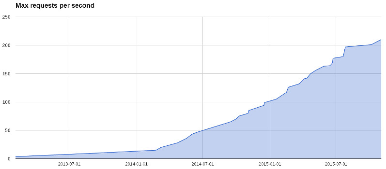

En los años 80 la moda empresarial era tener una minicomputadora
(del tamaño de un armario pequeño) y múltiples terminales conectados. La
llegada de los ordenadores “personales” fue una revolución, ya que hasta
entonces era impensable darle un ordenador en exclusiva a un
trabajador.
En general, un sistema de software suele poder fecharse con bastante
precisión sólo con ver la arquitectura que implementa. No deja de ser
curioso que se deje al arbitrio de modas un asunto tan serio como la
arquitectura de sistemas, sobre todo en empresas grandes. Lo cierto es
que cuantos más elementos seamos capaces de utilizar, más flechas
tendremos en nuestro carcaj para cuando las necesitemos.
Cada proyecto tiene su ámbito de operación, y su personal asignado.
Construir una página personal que va a recibir unas pocas visitas al día
usando Erlang, un lenguaje diseñado para sistemas telefónicos de alta
concurrencia, es tan ridículo como querer hacer un clon de Twitter en
Visual Basic. De ahí que tengamos que conocer los requisitos funcionales
y operativos de un sistema antes de poder empezar a hablar de
arquitectura.
Requisitos cambiantes
En las inmortales palabras citadas por Steve McConnell en Code Complete:
Los requisitos son como el agua: es más fácil construir sobre ellos
cuando están congelados.
Un sistema de software tiene que poder evolucionar durante su vida
útil. Esto significa responder a requisitos cambiantes sin excesivas
remodelaciones.
Como ingenieros, nuestra mayor aspiración es seguramente que lo que
construyamos dure en el tiempo. Para eso es necesario que pueda
actualizarse y mejorarse, añadiendo nuevas funcionalidades según se
necesiten. Gracias a la magia del software no tenemos que sacar nuestros
sistemas del servicio para actualizarlos; basta con hacer una copia del
código y reemplazar el de producción cuando están listas las mejoras.
Así que nos resulta relativamente fácil que nuestro software haga cosas
nuevas. ¿O no? Sólo tenemos que extenderlo para que haga cosas más allá
de su propósito original. Excepto cuando no se puede.
Todos conocemos algún proyecto que ha pasado su fecha de expiración.
Nadie quiere tocar el código porque se ha convertido en una masa
siniestra de spaghetti. Las modificaciones son inmanejables y
cada vez que se hace un cambio en un sitio, se rompe algo en otro
aparentemente no relacionado.
Nuestra misión es mantener el software flexible para que podamos
seguir añadiendo funcionalidades. Eso lleva algún esfuerzo extra, sin
duda, pero la recompensa es grande cuando el proyecto es realmente
exitoso.
Requisitos operacionales
Las circunstancias en las que nuestro sistema tiene que trabajar
cambian, para bien o para mal. A menudo necesitamos ampliar el rango
operativo del sistema sin añadir funcionalidades nuevas.
¿Cómo predecir el tráfico que tendremos, no ya al final de un año,
sino sólo dentro de un mes? Respuesta: no podemos. Sólo podemos intentar
ir un paso por delante del tráfico, responder rápido a los cambios y no
adelantar demasiado los acontecimientos.
Caso práctico: MediaSmart
Mobile

Peticiones por segundo en MediaSmart
Mobile
Esta gráfica muestra los picos de peticiones por segundo que hemos
recibido en MediaSmart Mobile desde 2013. Durante el primer año el
volumen fue creciendo linealmente, pasando de 2 a 12 krps (miles de
peticiones por segundo). A principios de 2014 pasó algo curioso: el
ritmo se aceleró, y pasamos de 15 a 100 krps a finales de año. Pero en
2015 el ritmo está decelerando de nuevo: apenas pasaremos de 210 krps
antes de final de año.
Por último, pero no menos importante, tenemos los costes de operación
del sistema. Alquilar servidores en la nube no sale barato; si no
optimizamos su uso al máximo probablemente tiremos un montón de
dinero.
Caso práctico: MediaSmart
Mobile
Tráfico diario en MediaSmart
Mobile
En MediaSmart el tráfico nocturno solía ser menos de una cuarta parte
del pico diario: en la gráfica se aprecia un mínimo de 2.5 millones de
peticiones por minuto, frente a casi 7 millones en el pico diario
(alrededor de las 8 de la tarde). Nota: Amazon AWS mide las
peticiones por minuto, en lugar de las peticiones por
segundo que hemos visto arriba. 6M por minuto equivale a 100
krps.
Mantener arrancados los servidores todo el día suponía desperdiciar
gran parte de la capacidad, y como en Amazon se paga por hora de
servidor los costes eran astronómicos. Es esencial poder usar un número
variable de servidores, y eso nos obliga a tener un balanceador de carga
que pueda admitir nuevas instancias dinámicamente.
Velocidad del cambio
La velocidad a la que somos capaces de realizar cambios en nuestros
sistemas es crítica. Demasiado lento, y no seremos capaces de absorber
un tráfico creciente de peticiones o de mantener los costes controlados;
demasiado rápido, y nuestro sistema estará caído todo el tiempo.
Si tu proveedor de servidores en la nube sube los precios un 300% de
un día para otro, cosa que ha
ocurrido en el pasado, ¿cuánto tiempo tarda tu equipo en migrar a un
nuevo proveedor?
Y si mañana decides montar un CPD propio y albergar tus propios
servidores, ¿cuánto tardarás en replicarlos? ¿Cómo realizarás el cambio
en el momento clave para empezar a dar servicio?
La arquitectura fluida
¿Cuál es la solución para acomodar tanto cambio? Nuestra humilde
sugerencia es mantener la arquitectura del sistema fluida, sin tomar
decisiones que comprometan su integridad. Tenemos que ser capaces de
pasar de un estado a otro, intentando dar servicio todo el tiempo.
Al oir esto un arquitecto de los de verdad, de los que juntan
piedras, seguramente tendría problemas para contener la risa. ¿Cómo se
pueden cambiar las vigas maestras de un edificio mientras los habitantes
están viviendo dentro?
Los ingenieros de software tenemos una gran ventaja frente a otras
ingenierías más tradicionales: no trabajamos con el mundo real, rígido y
frágil, sino con software, que es infinitamente moldeable.
Si encontramos restricciones en esta maleabilidad suele ser porque
alguien no ha hecho bien su trabajo. Subiendo de nivel paulatinamente,
encontramos cosas como:
código duplicado, donde hay que modificar varios trozos de código
para cambiar cualquier cosa, dificultando los cambios;
dependencias cruzadas, que hacen que un cambio en una parte tenga
efectos colaterales en partes no relacionadas;
drivers imbricados en múltiples secciones del código, que dificultan
migrar bases de datos u otros componentes similares.
Vamos a centrarnos en las restricciones que nos dificultan una
migración.
Reversibilidad y
termodinámica
En este punto vamos a tomar un desvío que nos llevará de viaje a la
intemporal tierra de la termodinámica.
En resumen, podemos considerar reversible un sistema que puede
invertirse sin consumir energía extra. Al mismo tiempo, si revertir el
funcionamiento del sistema requiere energía extra, entonces el sistema
no es reversible.
Supongamos que vamos a migrar un servicio de una máquina a otra. La
capa de compatibilidad en este caso será una máquina intermedia (un
proxy) que dirigirá el tráfico a una u otra según un parámetro de
configuración. Primero redirigiremos los accesos a esta máquina, que los
desviará al antiguo servidor. A continuación, cuando estemos preparados
redirigiremos el tráfico del proxy a la nueva máquina.
¿Crees que es posible revertir los cambios de forma tan sencilla? Hay
muchos ejemplos de sistemas que son así de fáciles de revertir: el botón
de “deshacer” en un programa de edición de textos, o los cambios en un
repositorio git usando el comando git revert. Nuestro reto
es hacer que un sistema complejo compuesto de varias piezas vuelva a su
estado inicial con la misma facilidad.
Por otra parte, queremos (dentro de lo posible) no tener que usar
este botón de deshacer, a no ser que la migración sea un fracaso
absoluto. Normalmente ante pequeños problemas es más rentable
arreglarlos y seguir adelante que volver atrás. Pero tener ese mecanismo
de seguridad es tan importante como para un trapecista tener una red
debajo, aunque por supuesto no planee usarla cuando sale a la pista.
Tipos de migración
Vamos a ver los tipos principales de migración por encima.
Programas: Los cambios en un programa que no desarrollamos
directamente pueden ir desde un cambio de versión a un cambio completo
del programa que usaremos. En el primer caso puede ser que tengamos
pequeños cambios de código: por ejemplo, cada actualización de la base
de datos Oracle puede requerir pequeños ajustes en las sentencias SQL
usadas. Cuando se cambia de programa puede que tengamos que cambiar el
driver, o incluso (si es una base de datos) migrar los datos. Por tanto
los cambios de programa a menudo llevan aparejados cambios de código y/o
datos.
Datos: Las migraciones de datos son el ejemplo más claro de
cambio que debe manejarse con delicadeza. En este caso hay que mover o
redistribuir información, que suele ser lo más delicado en una
migración.
Migraciones de base de datos
Como hemos visto, las migraciones de datos son el final de la cadena:
cada tipo de migración de arriba puede llevar aparejada una migración de
datos, pero no viceversa. Además son delicadas porque podemos perder en
un momento información muy valiosa. Vamos a estudiarlas un poco más en
detalle.
Hay un par de peculiaridades en los cambios de bases de datos que las
hace interesantes. En primer lugar, es bastante sencillo construir una
capa de compatibilidad que traduzca las operaciones entre dos bases de
datos, incluso aunque tengan modelos internos muy diferentes. Por
ejemplo, para hacer que una base de datos tradicional como PostgreSQL se
comporte como un almacenamiento clave-valor sólo tenemos que crear una
tabla única con un campo clave y otro campo valor de tipo texto.
Otra peculiaridad es que en estas migraciones es importante migrar
por separado el acceso y los datos. Normalmente queremos migrar primero
los datos, y luego cambiar el acceso; todo ello por supuesto sin
downtime.